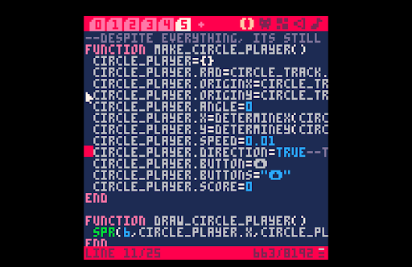
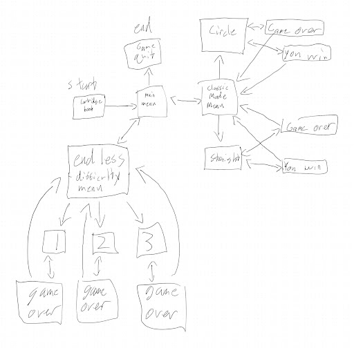
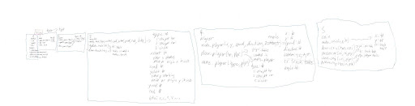
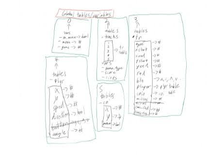
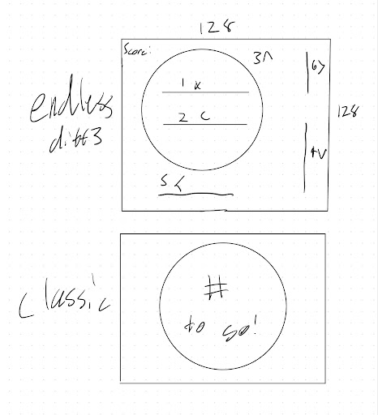

Press x to when your button hits the coin to go up a point. In endless, the buttons appear near the track.
Tokens Used: 2657/8192
Added

So after that disaster, the first thing I did was map out what I wanted for the game. At this point in time, it meant drawing out the game flow which would allow me to understand what I wanted from this game and the scope of it.

After that, I decided how many different files I would need and exactly what functions go into them. As I added more variables and functions, I updated the drawing as I went.

I also made a directory for all the variables in each file.

I made these two directories after understanding more about tables and how they can stack into each other to create more complicated games that allow for the storing of information in… “objects” which are basically just arrays in arrays (I was 3 tables deep by the end of this version). It definitely was a challenging experience not having traditional classes as objects but it was super fun to work around it and make the code work decently efficiently.
The gameplay in the classic modes is the exact same as the prototypes. However, I really wanted to add a little bit of spin on the classic Pop the Lock formula, hence, Endless Mode. Endless mode is a creation of mine where I was like… okay but what if you controlled two of them at once. I think it's a great way to add some depth to the game. It adds difficulty while also building upon the previously established mechanics of the game. Having multiple tracks at once also twists the formula as it activates a different part of the brain, multitasking (idk if this is a part of the brain) and it becomes less reliant on pure reaction time.

While endless mode is an interesting idea, it forced me to completely rework how I made the gameplay in the prototypes. In the prototypes, I had files that specifically made the player, coin, and track for the straight track, and files for the circle track. While this works for the simple classic mode with only one track, it becomes more and more unfeasible as you add more tracks in the endless mode. The best solution would be to make multiple of the same files with tiny differences in how they position the track and move the players and all that stuff. While it would probably fit within the constraints of the PICO-8 fantasy console, I am a big fan of DRY (don’t repeat yourself) coding and looked for better solutions. If you look at the files directory, you can see what I did! Essentially, in file number 2, which hosts the code to run gameplay, I made a table that contains all the tracks. The tracks are defined as tables of themselves, which host information regarding its position, misses, rng, what button it's assigned to, its player, and its coin. The player and coin are also tables of themselves which hold the position of each and how to move. While it seems really complicated, it actually works a lot like classes and objects present in other game engines, just with more setup and praying you didn’t accidentally get a variable name wrong in one of your many files that references tracks.player.direction, which is really easy to do since the game engine doesn’t have the nice quality of life UI like VS Code or Eclipse. After forming the data structures, I assigned each track a type, 1 - line, 2 - vertical, 3 - circle. Each file has its own code that handles the type of track it is from where it’s positioned, how the player moves, how the coin rng works, stuff like that.
I also made a game type variable, 1 - classic line, 2 - classic circle, 3 - endless, to keep track of what game type the player is currently in. Each file also has its own code that checks what game type is the current one, and runs accordingly.
The menus in this game are also really simple with the same idea as above, menu type keeps track of which menu they are on and file 2 has the code to handle it.
I also had a slew of helper functions that I had decided to put all in file 1, determinex(), determiney(), rndb(), etc were all really helpful functions that I used across multiple files.
Obviously, this game is not of the greatest quality. There are lots of bugs, cut features (highscores who?), and it's just not visually interesting. My whole goal with this project was to A. Learn more about the PICO-8 game engine, and B. Get something out there. I’m happy to say that I believe that I achieved both of these goals. I had actually set a deadline of November 16th to finish and launch the game on a website in order to push myself to work on it a lot within a very short time period. As such, I cut the scope of the project down and down until I came up with the bare essentials of the package, the gameplay. Clearly I made a few mistakes with adding some things in a little too early, but overall I think I succeeded in making sure that the game that ended up as Version 1 had everything it needed to function and exist. I will still hopefully continue to improve this game and make it in all its glory and original scope as I believe I still have so much to learn from this project.